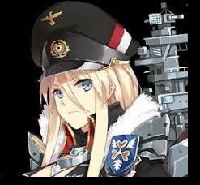

About Me
Artist, Writer and Gamer
I honestly love to draw like literally I have a lot of artworks at home. Even though I didn't get
to choose my passion course. I still intend to finish what I've started.
Writer, I wanted to become a writer like my grandfather although instead of diary... I want to share fantasy stories that can still
relate to real-life problems. Honestly, most of my discord friends are calling me George R.R Martin.
Gamer, I always wanted to play games that can really challenge my head.
Like RTS games like Starcraft and Stellaris, since I want to command a grand army of my own. I also play FPS games
like R6 and L4D the more people the better.
My Friends
Tenshi-san, she's my literally back-to-back buddy. Partners to be exact, different hobbies but a toast is the best.
Owl-san, my quiet buddy. The brains yet befriended a weirdo like me. We have similar hobbies and even though we're far away,
we're still buddies.
Abs-chan, the kohai power, who's literally artstyle is much more better than the senpai (I'm sad). Although, thanks to her I get new stuffs.
My Favorite characters from different games
Bismarck of Azur Lane

Bismarck of Azur Lane. The pragmatic and indomitable leader of Ironblood. I honestly I viewed her as head-strong and adamantant character.
However, quite contrary... She's actually having hard time to lead the Ironblood and maintain her figure while leaving herself astray to her
own real identity.
What I like about her is that, she may be strong but she needs a companion that eases her that she can be herself. Which is... I want also to fill in that role.
Herrscher of the Void
Kiana Kaslana, the Herrscher of the Void of Honkai Impact 3rd. The so-called the Ruler of the World, who wield the absolute power of Honkais.I viewed her as the queenly and evil character.
However, quite contrary... She isn't evil, she just hated the humanity for destroying the gifts that came from their "Creator" that's why she's determined to make Honkai as
superior race than humanity.
What I like about her is that, she has queenly personality, however if you were someone she respects she will let you live for the rest of your days from doomsday.
Gangut/Oktyabrskaya Revolyutsiya
Gangut or Oktyabrskaya Revolyutsiya of Kancolle. The Russian who loves to be in the front lines while maintaining her smile. I viewed her as the best drinking partner.
She hates being touched even by friendly means, although she respects the people who can keep up with her nature and her style. She's also a heavy smoker and drinker.
What I like about her is that, she has this slavic and hyperactive personality will personally give you a free vodka. I'll gladly take up the offer even though I don't think
I have the alcohol tolerance.